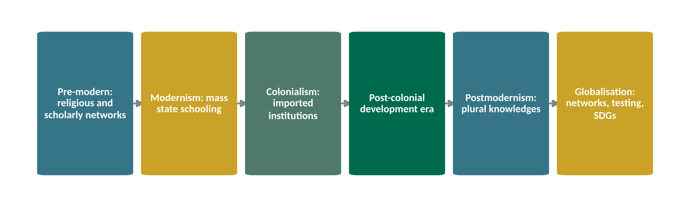
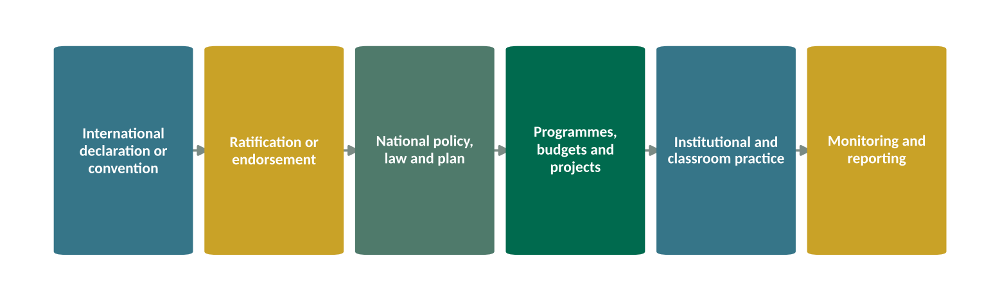
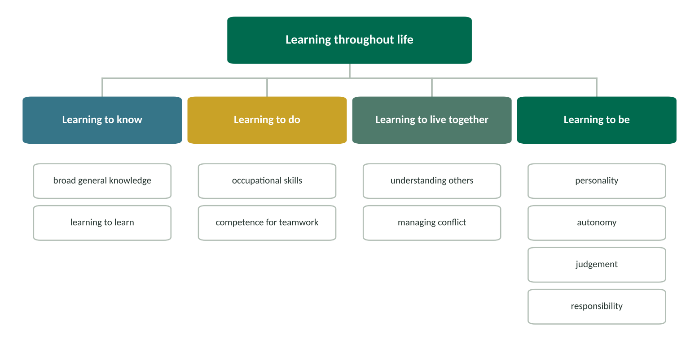
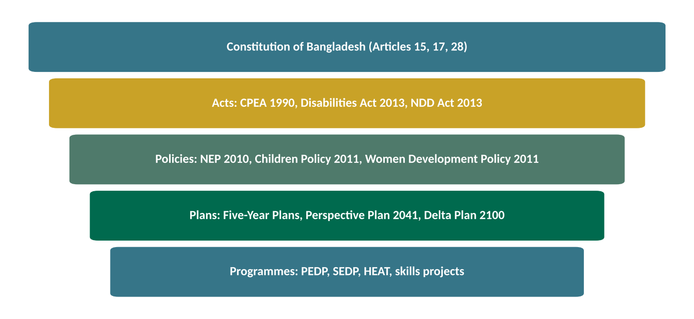
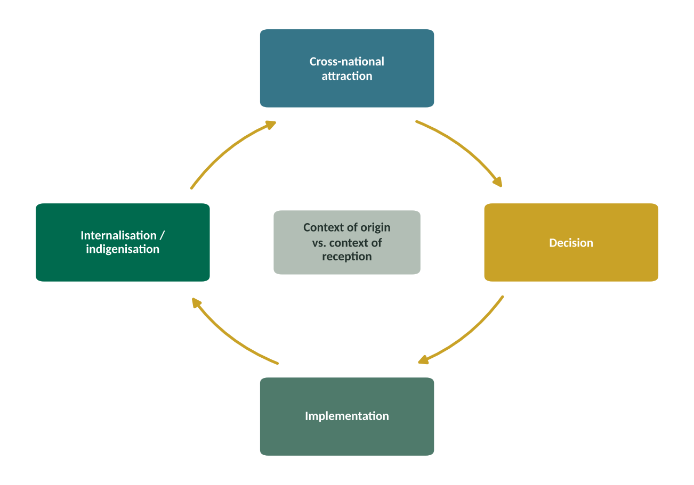
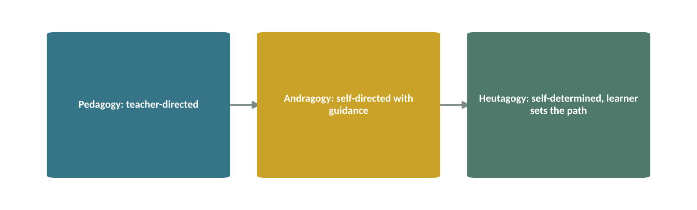
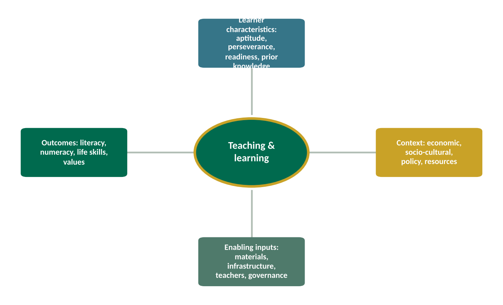
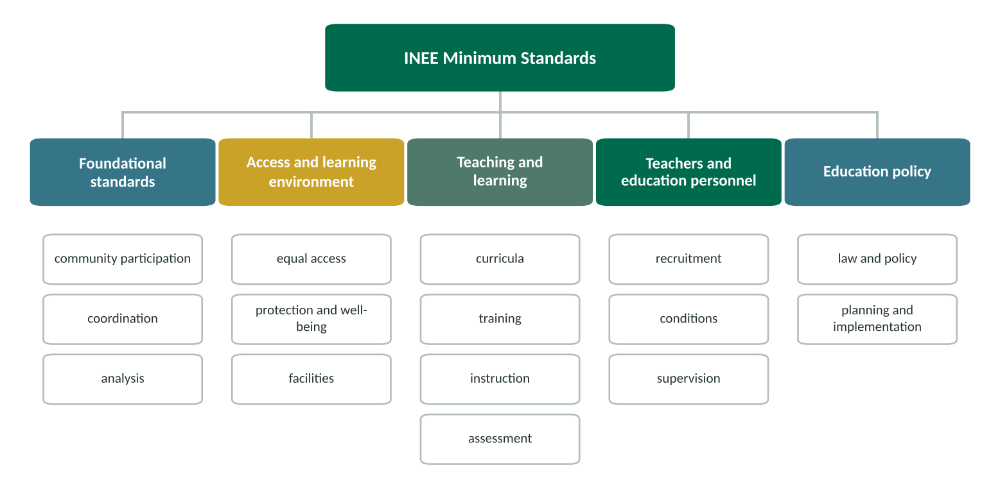
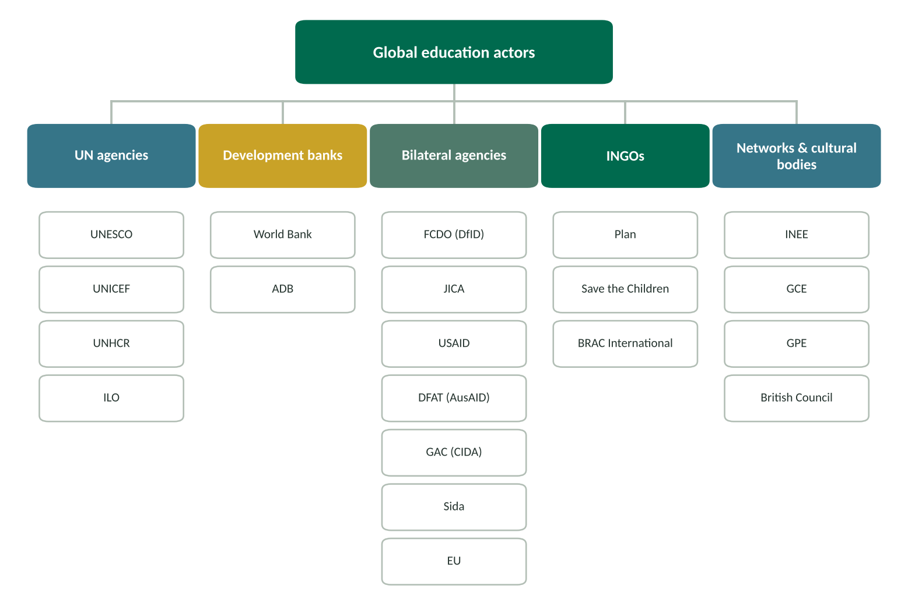

ED 501 Education in Global Perspective
Globalisation, international commitments, progress indicators, paradigm shifts, global actors, country systems and academic networking, read through a Bangladesh lens
Contents
- Unit 1: Conceptualizing Educational Change in Global Perspective
- Unit 2: Global Declarations and National Commitments
- Unit 3: Global and National Progress in Education
- Unit 4: Paradigm Shift in Educational Practices
- Unit 5: Organizational Approaches to the Global Education
- Unit 6: Successful Education Practices in Selected Countries
- Unit 7: Global Connections in Education
- Reading List
- Exam Preparation Bank
- References
About this course
Education no longer develops inside national borders alone. Curricula, assessment regimes, teacher standards and even the vocabulary of reform (competencies, learning outcomes, quality, accountability) now travel through international organisations, donor projects, league tables and academic networks. ED 501 equips the M.Ed student, and the future university lecturer, to read these global currents critically and to judge what Bangladesh can sensibly adopt, adapt or resist.
The course moves from the historical conceptualisation of global educational change (Unit 1), through the international declarations and national commitments that shape policy (Unit 2), to the indicators and reports used to measure progress (Unit 3). It then examines paradigm shifts in pedagogy, quality and emergencies (Unit 4), the operating models of international organisations (Unit 5), successful practices in selected countries (Unit 6), and finally the global academic connections, scholarships and networks a professional educator needs (Unit 7).
Course objectives
Explain contemporary educational events, trends, reforms and innovations across the globe and their theoretical underpinnings.
Recognise the diversity of educational development and challenges in different world regions.
Adapt successful practices in pedagogy, andragogy, management, curriculum and assessment to Bangladesh with critical awareness of context.
Describe the educational activities and operating models of selected national and international organisations.
Conduct comparative analysis of the education systems of selected countries using recognised comparative frameworks.
Collect and compile information, prepare reports and draw lessons from other systems while avoiding uncritical policy borrowing.
Each unit follows the official M.Ed syllabus order. Read the narrative first, then the boxes, then test yourself with the Exam focus questions.
Teal boxes = definitions and study tips. Golden boxes = must-remember ideas and exam focus. Green boxes = Bangladesh context. Ash boxes = critical perspectives expected at Master's level. Amber Verify before use boxes mark policy facts and statistics that change: check them against the latest BANBEIS, MoE, DPE, NCTB, UGC, UNESCO or World Bank sources before an exam.
The final chapter is a question bank (MCQs with answers, short and broad questions) in the style of university examinations, followed by full references in APA 7th style.
Unit 1: Conceptualizing Educational Change in Global Perspective
What the curriculum saysUnit 1: Conceptualizing Educational Change in Global Perspective · 5 contact hours
At the end of this unit learners will be able to
- describe the concept of global change
- explain the relationship between global change and education
- analyze the implications of recent trends of global change into education
- Chronological development of global education (pre-modern, modernism, colonialism,
- Relationship between global change and education
- Globalization and neoliberalism: Network governance and global education, international education
1.1 What is global change?
Global change refers to the large-scale, interconnected transformations in economy, technology, politics, culture and environment that cut across national boundaries and alter the conditions under which people live, work and learn. In education the term covers both external drivers (globalisation, migration, digital technology, climate change, demographic transition) and internal responses of education systems (reforms in curriculum, assessment, governance and teacher education).
Globalisation (Giddens, 1990): "The intensification of worldwide social relations which link distant localities in such a way that local happenings are shaped by events occurring many miles away and vice versa."
Globalisation and education (Carnoy, 1999): Globalisation is an economy whose strategic core activities, including innovation, finance and corporate management, work as a unit on a world scale in near real time. Its effects on education come through three channels: finance-driven reforms, competitiveness-driven reforms and equity-driven reforms.
Carnoy's (1999) typology remains one of the clearest lenses for analysing reform in developing countries such as Bangladesh:
| Type of reform | Driving logic | Typical measures | Bangladesh illustration |
|---|---|---|---|
| Competitiveness-driven | Raise productivity of labour for a global economy | Decentralisation, standards, better management, improved teacher recruitment, curriculum for skills | Competency-based curriculum, TVET expansion, skills development projects |
| Finance-driven | Reduce public spending and shift costs | Cost-recovery, shifting spending from higher to basic education, privatisation, larger class sizes | Growth of private universities after the Private University Act 1992; fee-based private schools and coaching |
| Equity-driven | Increase equality of opportunity | Targeted programmes for low-income, rural, girls, disabled learners | Female Secondary School Stipend, primary stipend, school feeding, inclusive education |
Table 1. Carnoy's three types of globalisation-driven education reform
1.2 Chronological development of global education
The syllabus asks for a chronological reading of how education became "global". The following periods are analytic, not watertight.
| Period | Core features | Implications for education |
|---|---|---|
| Pre-modern (before c. 1500) | Religious and scholarly networks: Nalanda and Vikramashila, Al-Azhar, Bologna, Paris; travelling scholars; manuscripts | Education elite, religious, oral and text-based; knowledge travelled along trade and pilgrimage routes (e.g., Xuanzang's visit to Nalanda) |
| Modernism (c. 1500 to 1945) | Enlightenment, print, nation-states, industrialisation | Mass compulsory schooling (Prussia, 1763 onwards; England 1870, 1880), state curricula, normal schools for teachers; schooling as nation-building |
| Colonialism (16th to mid-20th century) | European empires export institutions | Macaulay's Minute (1835), Wood's Despatch (1854), University of Calcutta (1857), University of Dhaka (1921); English-medium elite, vernacular masses; dual systems persist |
| Post-colonial and development era (1945 to 1980s) | UN system, human capital theory, aid | Universal Declaration (1948), UNESCO (1945), World Bank lending to education from 1962; manpower planning; expansion of primary schooling |
| Postmodernism (late 20th century) | Questioning grand narratives, identity, plural knowledges | Multicultural and critical pedagogies, recognition of indigenous knowledge, learner-centred and constructivist approaches |
| Globalisation (1990s onwards) | ICT, liberalised trade, neoliberal governance, international testing | EFA (1990), GATS and trade in education services (1995), PISA (2000), MDGs (2000), SDGs (2015); global benchmarking and policy borrowing |
Table 2. Periods in the development of global education

Figure 1. Chronology of global education from pre-modern to globalised eras
The Indian subcontinent illustrates every stage. The ancient Buddhist viharas of Paharpur (Somapura Mahavihara) and Mainamati in present-day Bangladesh belonged to a pre-modern international learning network. Colonial rule produced the English-medium, examination-oriented system whose legacy is still visible in public examinations, the Bangla-English-Madrasah triple stream and the prestige of English. Post-1971 Bangladesh entered the development era through the Qudrat-e-Khuda Commission and heavy donor involvement, and since 1990 it has been strongly shaped by EFA, the MDGs and the SDGs.
1.3 Relationship between global change and education
The relationship is two-way. Global change shapes education (demands for new skills, new technologies, migration, climate risk) and education shapes global change (human capital, innovation, citizenship, sustainability).

Figure 2. Channels through which global change reaches education
Four theoretical lenses help explain this relationship at Master's level:
| Theory | Key thinkers | Core claim | Critique |
|---|---|---|---|
| Human capital theory | Schultz (1961); Becker (1964) | Education is an investment that raises productivity and earnings; justifies public spending | Reduces education to economic value; ignores signalling and credentialism |
| World culture / world polity theory | Meyer, Ramirez, Boli | Education systems converge because nation-states adopt global scripts of modern schooling | Explains isomorphism but neglects local agency and power |
| World-systems and dependency theory | Wallerstein; Carnoy (1974); Altbach | Core countries dominate the periphery through knowledge, language and aid; education reproduces dependency | Can be deterministic; underplays real gains in the South |
| Culturalist / critical theory | Anderson-Levitt; Steiner-Khamsi; Appadurai | Global ideas are locally re-interpreted; "vernacular globalisation" | Harder to generalise; needs ethnographic evidence |
Table 3. Theories of education and global change
Global convergence at the level of policy talk (everyone speaks of competencies, quality and accountability) often coexists with divergence at the level of classroom practice. This distinction between "talk", "action" and "practice" is central to comparative education (Steiner-Khamsi, 2004).
1.4 Globalisation and neoliberalism
Neoliberalism is a political-economic philosophy that favours free markets, privatisation, deregulation, competition and a smaller state. In education it appears as school choice, vouchers, performance-based pay, standardised testing, league tables, public-private partnerships and the treatment of education as a tradable service.
Neoliberalism (Harvey, 2005): "A theory of political economic practices that proposes that human well-being can best be advanced by liberating individual entrepreneurial freedoms and skills within an institutional framework characterized by strong private property rights, free markets, and free trade."
Sahlberg (2011, 2021) named the resulting global reform package the Global Educational Reform Movement (GERM): standardisation of teaching and learning, focus on core subjects (literacy, numeracy), test-based accountability, market-style school choice and corporate management models. He contrasts GERM with Finland's emphasis on trust, collaboration, equity and teacher professionalism.
| GERM | Alternative (e.g., Finland) |
|---|---|
| Standardising teaching and learning | Customising teaching and learning |
| Focus on literacy and numeracy | Focus on broad, creative learning |
| Test-based accountability | Trust-based responsibility |
| Competition and school choice | Collaboration and equity |
| Corporate management models | Professional leadership by educators |
Table 4. GERM compared with an alternative reform model (after Sahlberg, 2021)
Network governance and global education
Ball (2012) and Ball and Junemann (2012) describe a shift from government (hierarchical, state-run) to network governance, where policy is made through webs of state agencies, international organisations, philanthropic foundations, consultancies, edu-businesses and NGOs. Policy knowledge travels through conferences, reports, consultants and "best practice" toolkits.

Figure 3. Actors in global network governance of education
Bangladesh's education sector is a clear example of network governance. Sector-wide programmes such as PEDP (primary) and SESIP or SEDP (secondary) are co-financed and co-monitored by government and development partners (World Bank, ADB, EU, JICA, UNICEF and others) through joint annual reviews. BRAC, the largest NGO provider of non-formal primary education, and CAMPE as a civil society coalition are also influential policy actors.
International education
International education has several meanings: (a) education about other countries and global issues (international understanding, peace education); (b) cross-border movement of students, teachers, programmes and institutions; (c) international schools and curricula (IB, Cambridge, Edexcel); and (d) development cooperation in education. UNESCO's 1974 Recommendation concerning Education for International Understanding, Co-operation and Peace is an early normative text for the first meaning.
Critics argue that globalisation in education produces homogenisation (one model fits all), commodification (education as a product), brain drain from the South, and epistemic injustice (Southern knowledge marginalised). Defenders point to rapid expansion of access, cross-border research collaboration and the spread of rights-based norms. A balanced Master's answer acknowledges both and stresses that outcomes depend on how national actors mediate global pressures.
Likely questions: "Explain Carnoy's typology of globalisation-driven reforms with examples from Bangladesh." "What is GERM? Critically compare it with the Finnish model." "Discuss the relationship between global change and education using at least two theoretical perspectives." "What is network governance in education?"
Unit 2: Global Declarations and National Commitments
What the curriculum saysUnit 2: Global Declarations and National Commitments · 5 contact hours
At the end of this unit learners will be able to
- describe different international declarations on education
- review different global and national declarations
- critically examine implications of global and national commitments in Bangladesh context
- UN-UHRC, UN-CRC, EFA, DFA, CEDAW, Salamanca, UNCRPD, Delor‘s Commission,
- Constitution of Bangladesh, Education Commissions (from 1972 to2010), 5-year Plans, CPEA, Draft Education Act, NEP 2010, Child Policy, Gender Policy, Person with Disabilities Right and
- Policy-travelling, borrowing and critical examination of its implication in the national context
2.1 Why international declarations matter
International instruments create norms (what governments ought to do), obligations (for ratified conventions), targets and monitoring mechanisms. Declarations (e.g., Jomtien, Incheon) are soft law; conventions (e.g., CRC, CEDAW, CRPD) are treaties binding on states that ratify them, with reporting to treaty bodies.

Figure 4. From international norm to classroom practice
2.2 Major international instruments
| Instrument | Year | Key education provisions |
|---|---|---|
| Universal Declaration of Human Rights (UDHR) | 1948 | Article 26: everyone has the right to education; elementary education free and compulsory; education directed to full development of personality and respect for human rights; parents have prior right to choose |
| International Covenant on Economic, Social and Cultural Rights | 1966 | Articles 13 and 14: free compulsory primary, progressively free secondary and higher education |
| Convention on the Elimination of All Forms of Discrimination against Women (CEDAW) | 1979 | Article 10: equal rights in education, same curricula, elimination of stereotyped concepts, reduction of female dropout |
| UN Convention on the Rights of the Child (UNCRC) | 1989 | Article 28: right to education, free compulsory primary, measures against dropout, discipline consistent with dignity; Article 29: aims of education |
| World Declaration on Education for All (EFA), Jomtien | 1990 | Meeting basic learning needs; expanded vision of basic education; universal access and equity; focus on learning acquisition |
| Salamanca Statement and Framework for Action | 1994 | Inclusive schools are "the most effective means of combating discriminatory attitudes"; regular schools with inclusive orientation for children with special educational needs |
| Delors Commission report, Learning: The Treasure Within | 1996 | Four pillars of learning; learning throughout life |
| Dakar Framework for Action (DFA) | 2000 | Six EFA goals for 2015 (ECCE, UPE, youth and adult skills, 50% improvement in adult literacy, gender parity and equality, quality) |
| UN Convention on the Rights of Persons with Disabilities (UNCRPD) | 2006 | Article 24: inclusive education system at all levels, reasonable accommodation, individualised support |
| Incheon Declaration and Education 2030 Framework for Action | 2015 | Commits to SDG 4: inclusive, equitable quality education and lifelong learning for all; 12 years free publicly funded primary and secondary (9 compulsory); at least 1 year free and compulsory pre-primary |
| Sustainable Development Goals (SDGs) | 2015 | SDG 4 with ten targets (4.1 to 4.7, 4.a to 4.c) |
Table 5. Key international instruments on education
The syllabus lists "UN-UHRC". This is usually read as the Universal Declaration of Human Rights (UDHR, 1948), although the UN Human Rights Council (UNHRC, established 2006) also reviews states' education rights through its Universal Periodic Review. Confirm with your department which is meant and prepare both.
The four pillars of learning (Delors, 1996)

Figure 5. Delors Commission: four pillars of learning
The Commission, chaired by Jacques Delors, also identified seven tensions to be overcome: global and local, universal and individual, tradition and modernity, long-term and short-term considerations, competition and equality of opportunity, expansion of knowledge and our capacity to assimilate it, and the spiritual and the material.
SDG 4 and its targets
| Target | Focus |
|---|---|
| 4.1 | Free, equitable, quality primary and secondary education leading to relevant and effective learning outcomes |
| 4.2 | Access to quality early childhood development, care and pre-primary education |
| 4.3 | Equal access to affordable quality TVET and tertiary education, including university |
| 4.4 | Increase youth and adults with relevant skills, including ICT, for employment, decent jobs and entrepreneurship |
| 4.5 | Eliminate gender disparities and ensure equal access for the vulnerable, including persons with disabilities, indigenous peoples and children in vulnerable situations |
| 4.6 | All youth and a substantial proportion of adults achieve literacy and numeracy |
| 4.7 | Knowledge and skills for sustainable development, human rights, gender equality, culture of peace, global citizenship, cultural diversity |
| 4.a | Build and upgrade education facilities that are child, disability and gender sensitive; safe, non-violent, inclusive learning environments |
| 4.b | Expand scholarships for developing countries for higher education |
| 4.c | Increase the supply of qualified teachers, including through international cooperation |
Table 6. SDG 4 targets (Education 2030)
The Education 2030 Framework for Action set two financing benchmarks: public education expenditure of at least 4 to 6% of GDP and/or at least 15 to 20% of total public expenditure. Bangladesh has persistently spent around 2% of GDP or less on education, one of the lowest ratios in South Asia, which is a frequent exam point.
Check the current education share of GDP and of the national budget for the latest fiscal year (Ministry of Finance budget documents; UNESCO UIS). Figures vary depending on whether technology ministries' allocations are bundled with education.
2.3 National commitments of Bangladesh
The Constitution
| Article | Provision |
|---|---|
| Article 15 | Basic necessities, including education, as a fundamental responsibility of the state |
| Article 17 | State to establish a uniform, mass-oriented and universal system of education; free and compulsory education for all children to a stage determined by law; relate education to the needs of society; remove illiteracy within a determined time |
| Article 19 | Equality of opportunity for all citizens |
| Article 23 | Preservation of national culture and language |
| Article 28 | No discrimination on grounds of religion, race, caste, sex or place of birth, including access to educational institutions; special provision for women, children and backward sections allowed |
| Article 41 | Freedom of religion; no one attending an educational institution required to receive religious instruction of another religion |
Table 7. Education-related provisions of the Constitution of Bangladesh (1972)
Note that Article 17 is in Part II (Fundamental Principles of State Policy), which is not judicially enforceable, while Article 28 is a fundamental right. This distinction is often examined.
Education commissions and policies, 1972 to 2010
| Commission / policy | Year | Key recommendations |
|---|---|---|
| Bangladesh Education Commission (Qudrat-e-Khuda) | 1972 to 1974 | Free, compulsory primary to Grade 5 by 1980 and Grade 8 by 1983; Bangla as medium; secular, science-oriented, work-oriented education; universal eight-year primary |
| Interim Education Policy / National Curriculum and Syllabus Committee | 1976 to 1979 | Curriculum reform; detailed syllabi for primary and secondary |
| Mofizuddin Ahmed Education Commission | 1987 to 1988 | Eight-year primary; emphasis on vocational and religious education |
| Shamsul Haque Education Policy Committee | 1997 | Draft policy (2000) with eight-year primary; largely adopted later |
| MA Bari Commission | 2002 | Reforms in higher and secondary education |
| Moniruzzaman Miah Commission | 2003 | Comprehensive report; never implemented |
| Kabir Chowdhury Committee: National Education Policy (NEP) 2010 | 2009 to 2010 | One-year pre-primary; primary extended to Grade 8; secondary Grades 9 to 12; common core curriculum across streams; creative questions; stipends; permanent education commission; Education Act; teacher training; ICT; inclusive and indigenous language education |
Table 8. Major education commissions and policies of Bangladesh
Dates and chairs of the intermediate commissions (1976 to 2003) are reported differently across sources. Cross-check with the Ministry of Education NEP 2010 document (its introduction lists previous commissions) and BANBEIS publications before quoting precise years.
Laws, plans and other national commitments
Compulsory Primary Education Act 1990 (CPEA): made primary education (age 6 to 10) compulsory; phased implementation from 1992 and nationwide from 1993.
Draft Education Act: prepared from 2011 onwards to give legal backing to NEP 2010 (regulating coaching, notebooks, private tuition, teacher recruitment, compulsory education to Grade 8). Several drafts have been circulated; at the time of writing it had not been enacted.
National Children Policy 2011: child rights, early childhood development, protection, education for disadvantaged children.
National Women Development Policy 2011 and gender strategies in education.
Persons with Disabilities Rights and Protection Act 2013: right to inclusive education, accessible institutions and reasonable accommodation.
Neuro-Developmental Disability Protection Trust Act 2013 (NDD Act): protection, education and care of persons with autism, Down syndrome, cerebral palsy and intellectual disability.
Five-Year Plans: the Seventh (2016 to 2020) and Eighth (2020/21 to 2025) Five-Year Plans align education targets with the SDGs (quality, TVET expansion, digital skills).
Perspective Plan 2021 to 2041 (Vision 2041): aims for upper-middle income status by 2031 and high income by 2041; stresses quality, skills, STEM, TVET and a knowledge economy.
Bangladesh Delta Plan 2100 (adopted 2018): long-term water, climate and land plan; implications for disaster-resilient schools, climate education and education in emergencies.
The status of the Draft Education Act, the Five-Year Plan in force, and any post-2024 policy reviews or new education commission should be checked against current Ministry of Education and Planning Commission sources before the exam.

Figure 6. Hierarchy of national commitments
2.4 Policy travelling and policy borrowing
Policy borrowing is the conscious adoption in one context of policy observed in another (Phillips & Ochs, 2003). Policy lending is the active promotion of policies by donors. Policy travelling is a broader term for the movement of ideas across borders without implying conscious, rational transfer (Steiner-Khamsi, 2004).

Figure 7. Phillips and Ochs (2003): four stages of policy borrowing
| Reason | Explanation |
|---|---|
| Problem-solving | Genuine search for a solution that worked elsewhere |
| Legitimation | Reference to "international best practice" to justify a reform that is politically contested at home |
| Externalisation | Invoking foreign examples to break domestic deadlock (Schriewer) |
| Donor conditionality | Policies attached to loans or grants |
| Symbolic modernity | Signalling that the country is modern and globally aligned |
Table 9. Why governments borrow policy (Steiner-Khamsi, 2004)
Examples for critical examination in Bangladesh include: (a) creative (structured) questions introduced in 2008 to 2010, inspired by Bloom-based structured questioning, which teachers struggled to implement and which fuelled guidebooks and coaching; (b) school-based assessment (SBA) piloted in 2007 and withdrawn; (c) the competency-based National Curriculum Framework 2021 with experiential learning and continuous assessment, rolled out in 2023 to 2024 and then reversed for secondary in 2025 amid public controversy; (d) Grade 5 PECE and Grade 8 JSC public exams introduced in 2009 and 2010 and later discontinued. Each case shows the importance of teacher readiness, public acceptance, assessment alignment and resources.
Confirm the current status of the 2021 curriculum framework and of public examinations at Grades 5 and 8 with the latest NCTB and Ministry announcements; this area has changed frequently since 2023.
Policy borrowing fails when (1) the context of origin is ignored (Finland's results rest on teacher selectivity, equity and social trust); (2) only the surface is borrowed (the form of a policy without its supporting conditions); (3) teachers are not engaged; and (4) "best practice" becomes a slogan. A good Master's answer proposes contextual adaptation: pilot, evaluate, build capacity, involve stakeholders and scale gradually.
Expect: "Critically examine the influence of EFA and SDG 4 on education policy in Bangladesh." "Discuss constitutional provisions on education." "What is policy borrowing? Explain Phillips and Ochs's model with a Bangladesh example." "Write short notes: Salamanca Statement; Incheon Declaration; four pillars of learning."
Unit 3: Global and National Progress in Education
What the curriculum saysUnit 3: Global and National Progress in Education · 5 contact hours
At the end of this unit learners will be able to
- identify and describe Global and National Progress Indicators in Education
- compare and contrast between global and national education progress
- International educational progress review: UNESCO-GMR, MICS, WB‘s Report, ADB‘s Report, UNDP-HDI Report, SGD‘s Progress Report, OECD (PISA), TIMSS, UNICEF-WCR,
- Global Citizenship Education (GCED): Values, principles, implementation strategies of GCED through Education for Sustainable Development (ESD) approaches
- Internationalization of education: Concept, criteria, politics
- Higher Education Ranking: Ranking organizations, criteria, impact, politics and status of education in Bangladesh and challenges, Higher Education Strategic Plan in Bangladesh
- National educational progress: Review of various reports (ASPR, BANBEIS, Planning Commission, PEDP, SESIP, CAMPE-Education Watch, CPD, TIB), current status of education in Bangladesh, competencies and skills framework, National curriculum framework
3.1 Why measure progress?
Indicators make commitments monitorable. Global monitoring has shifted from inputs (enrolment, spending) under EFA and the MDGs to outcomes (learning, skills) under SDG 4. This shift raises questions of measurement, comparability and the power of international organisations to define "quality".
3.2 International progress reviews
| Report / survey | Producer | What it measures | Notes |
|---|---|---|---|
| Global Education Monitoring (GEM) Report, formerly EFA Global Monitoring Report (GMR) | UNESCO (independent team) | Progress on EFA (2002 to 2015) and SDG 4 (2016 onwards); annual thematic focus | Themes include inclusion (2020), non-state actors (2021/2), technology (2023), leadership (2024/5) |
| Multiple Indicator Cluster Surveys (MICS) | UNICEF with national statistics offices (BBS in Bangladesh) | Household survey: child well-being, early childhood development index, attendance, foundational learning skills | Bangladesh MICS 2019 included foundational reading and numeracy for ages 7 to 14 |
| World Bank reports | World Bank | World Development Reports (WDR 2018: Learning to Realize Education's Promise), learning poverty, Human Capital Index | "Learning poverty": % of 10-year-olds unable to read and understand a simple text |
| ADB reports | Asian Development Bank | Sector assessments, skills, TVET, secondary | Major financier of secondary and skills projects in Bangladesh |
| Human Development Report (HDI) | UNDP | Composite of life expectancy, education (mean and expected years of schooling) and GNI per capita | Bangladesh in "medium human development" group |
| SDG Progress Reports | UN, and national (GED, Planning Commission) | SDG indicators globally and nationally | Bangladesh has published SDG Progress Reports (2018, 2020, 2023) |
| PISA | OECD | 15-year-olds' reading, mathematics and science literacy; every three years since 2000 | Bangladesh does not participate; PISA-D for developing countries |
| TIMSS | IEA | Mathematics and science achievement at Grades 4 and 8; every four years since 1995 | Curriculum-based (unlike PISA) |
| PIRLS | IEA | Reading at Grade 4; every five years since 2001 | |
| State of the World's Children (SOWC) | UNICEF | Annual flagship report on children's well-being | The syllabus calls it "UNICEF-WCR" |
| SAARC | South Asian Association for Regional Cooperation | Regional cooperation, SAARC Development Goals, South Asian University (New Delhi) | |
| GCED and ESD monitoring | UNESCO | SDG 4.7 indicator: mainstreaming of GCED and ESD in policy, curricula, teacher education and assessment |
Table 10. Major international reports and assessments

Figure 8. PISA and TIMSS compared
International large-scale assessments (ILSAs) are criticised for creating "PISA shock" and policy panic (e.g., Germany 2001), for narrowing curricula to what is tested, for cultural bias in items, and for strengthening the OECD's soft power (Sellar & Lingard, 2014). Supporters argue they provide comparable evidence and expose inequity. Bangladesh relies on its own National Student Assessment (NSA) for primary and LASI for secondary to measure learning.
3.3 Global Citizenship Education (GCED)
Global Citizenship Education (UNESCO, 2015): GCED "aims to empower learners of all ages to assume active roles, both locally and globally, in building more peaceful, tolerant, inclusive and secure societies." It is grounded in human rights and is one of the two named elements of SDG target 4.7.
UNESCO organises GCED learning around three core conceptual dimensions:

Figure 9. UNESCO's three domains of learning in GCED
Values and principles: human rights, respect for diversity, peace and non-violence, social justice, sustainability, solidarity and shared responsibility.
Implementation strategies: whole-school approach; integration across subjects (social studies, languages, science); stand-alone courses; extra-curricular clubs and service learning; teacher education; participatory pedagogy (dialogue, project-based learning, simulations such as Model UN); partnerships with communities.
Implementing GCED through ESD approaches
Education for Sustainable Development (ESD) empowers learners with knowledge, skills, values and attitudes to take informed decisions for environmental integrity, economic viability and a just society. UNESCO led the UN Decade of ESD (2005 to 2014), the Global Action Programme (2015 to 2019) and now ESD for 2030 (2020 to 2030). ESD's five priority action areas are: advancing policy; transforming learning environments; building capacities of educators; empowering and mobilising youth; and accelerating local-level action.
| Feature | GCED | ESD |
|---|---|---|
| Core concern | Peace, human rights, diversity, global justice | Environmental, social and economic sustainability |
| SDG link | Target 4.7 | Target 4.7 and Goal 13 (climate) |
| Pedagogy | Dialogue, critical inquiry, action projects | Systems thinking, future thinking, action competence |
| Bangladesh entry points | Civics, Bangladesh and Global Studies, scouting, debate clubs | Climate change topics in science and geography, eco-clubs, disaster preparedness |
Table 11. GCED and ESD: common ground
3.4 Internationalisation of education
Internationalisation of higher education (Knight, 2004): "The process of integrating an international, intercultural or global dimension into the purpose, functions or delivery of post-secondary education."
Knight distinguishes internationalisation at home (curriculum, intercultural learning, foreign faculty, virtual exchange) from internationalisation abroad or cross-border education (mobility of students, programmes, providers). De Wit et al. (2015) extended the definition to emphasise "intentional" internationalisation that enhances quality "for all students and staff" and makes "a meaningful contribution to society".
Criteria often used: international students and staff ratios, joint degrees, international research collaboration and co-authorship, internationalised curricula, MoUs, language of instruction, mobility opportunities.
Politics: internationalisation can become revenue-seeking (recruiting fee-paying foreign students), status-seeking (ranking-driven), or a tool of soft power (scholarships, branch campuses). It can widen inequality between globally connected elite universities and local institutions.
3.5 Higher education rankings
| Ranking | Organisation / since | Main criteria (simplified) |
|---|---|---|
| QS World University Rankings | Quacquarelli Symonds, 2004 (with THE until 2009) | Academic reputation, employer reputation, faculty/student ratio, citations per faculty, international faculty and student ratios, international research network, employment outcomes, sustainability |
| THE World University Rankings | Times Higher Education, 2010 (own methodology) | Teaching, research environment, research quality, international outlook, industry |
| ARWU (Shanghai Ranking) | Shanghai Jiao Tong University, 2003 | Nobel and Fields winners among alumni and staff, highly cited researchers, papers in Nature and Science, indexed publications, per capita performance |
| U.S. News Best Global Universities | U.S. News, 2014 | Research reputation and bibliometrics |
| Webometrics | CSIC Spain, 2004 | Web presence, visibility, openness |
| THE Impact Rankings | Times Higher Education, 2019 | Contribution to the SDGs |
Table 12. Major global university rankings
Ranking weightings change frequently (QS revised its methodology in 2023/24). Bangladesh's ranked universities (e.g., University of Dhaka, BUET, BRAC University, North South University, Daffodil International University in impact rankings) and their bands change yearly. Check the latest editions before citing positions.
Rankings are criticised for privileging research-intensive, English-language, science-heavy universities; relying on reputation surveys; ignoring teaching quality and social mission; and encouraging "gaming" (Hazelkorn, 2015). Yet they shape government funding, student choice and international partnerships.
Higher education in Bangladesh: status, strategy and challenges
Governance: University Grants Commission (UGC, 1973); public universities under the 1973 Order (four autonomous: DU, RU, CU, JU) or individual Acts; private universities under the Private University Act 1992, replaced by the Act of 2010; affiliated colleges under National University (1992).
Strategic Plan for Higher Education 2006 to 2026 (UGC): expansion with quality, research, governance reforms, quality assurance.
HEQEP (Higher Education Quality Enhancement Project, World Bank-supported, c. 2009 to 2018): Academic Innovation Fund, Institutional Quality Assurance Cells (IQACs), BdREN research and education network.
Bangladesh Accreditation Council Act 2017: programme and institutional accreditation.
HEAT (Higher Education Acceleration and Transformation) project, World Bank, approved 2023: research, digital transformation and labour-market relevance.
Challenges: quality of affiliated colleges, graduate unemployment, low research spending, politicisation, session jams (largely reduced), faculty recruitment practices, limited internationalisation.
Confirm the number of public and private universities (UGC Annual Report), HEAT project details and timelines, and any new UGC strategic plan.
3.6 National educational progress reviews
| Source | Producer | Focus |
|---|---|---|
| Annual Primary School Census (APSC) and Annual Sector Performance Report (ASPR) | Directorate of Primary Education (DPE) | Primary enrolment, completion, dropout, PEDP indicators |
| BANBEIS statistics | Bangladesh Bureau of Educational Information and Statistics | Annual education statistics for all post-primary levels |
| Planning Commission | GED, Planning Commission | Five-Year Plans, SDG progress reports, mid-term reviews |
| PEDP | Ministry of Primary and Mass Education with development partners | PEDP II (2004 to 2011), PEDP3 (2011 to 2018), PEDP4 (2018 to 2023, extended) |
| SESIP / SEDP | Ministry of Education with ADB, World Bank | Secondary Education Sector Investment Programme; Secondary Education Development Program |
| CAMPE Education Watch | Campaign for Popular Education (civil society) | Independent research reports since 1999 on access, quality, teachers, COVID-19 impacts |
| CPD | Centre for Policy Dialogue (think tank) | Budget analysis, youth skills, SDG monitoring |
| TIB | Transparency International Bangladesh | Governance and corruption studies (e.g., in teacher recruitment, MPO) |
Table 13. Sources for reviewing national progress in Bangladesh
Competencies, skills frameworks and the National Curriculum Framework
The Adolescent Skill Framework (NCTB, 2018, with UNICEF) and the National Curriculum Framework 2021 defined ten core competencies for learners, including communication, critical and creative thinking, problem-solving, collaboration, digital, ethical and environmental competencies, linked to life and livelihood. The NCF proposed experiential learning, reduced high-stakes examinations, continuous assessment and a single stream to Grade 10.
Bangladesh achieved near-universal primary enrolment and gender parity (indeed girls' advantage) in primary and secondary enrolment by the 2010s, but learning outcomes, completion, teacher quality and financing remain the main challenges. The NSA has repeatedly found that a large share of Grade 3 and Grade 5 students do not meet grade-level competencies in Bangla and mathematics.
Quote current net enrolment, completion and dropout rates and the latest NSA findings only from the most recent APSC/ASPR and BANBEIS releases.
Expect: "Compare PISA and TIMSS." "What is GCED? How can it be implemented through ESD?" "Critically discuss global university rankings and the position of Bangladeshi universities." "Using national reports, assess the current status of education in Bangladesh."
Unit 4: Paradigm Shift in Educational Practices
What the curriculum saysUnit 4: Paradigm Shift in Educational Practices · 5 contact hours
At the end of this unit learners will be able to
- analyze the recent trends of educational changes
- identify change factors that can be replicated in the Bangladesh context
- analyze gaps between policy, strategy and practice in Bangladesh context
- understanding responses to Education in Emergency (EiE) and refugee education situation
- Shift in pedagogy and andragogy, Inclusive Pedagogy, Blended Pedagogy
- Shift in T-L: Participatory and interactive teaching-learning, education management (PBM,
- Monitoring to mentoring
- Redefining Quality indicators of Education: concept, indicators, qualification framework, status,
- 21st century framework
- Education in Emergency (i.e. COVID 19, Climate change, refugee/politicaly displaced nationals)
- Refugee education in Global perspective, refugee education policy (UNHCR), INEE minimum standard
4.1 The idea of a paradigm shift
Thomas Kuhn (1962) used paradigm to mean the shared assumptions, methods and exemplars of a scientific community; a paradigm shift occurs when anomalies accumulate and a new framework replaces the old. In education the term describes the move from a teaching paradigm (instruction, transmission, teacher-centred) to a learning paradigm (learning, construction, learner-centred) (Barr & Tagg, 1995).
| Dimension | Instruction paradigm | Learning paradigm |
|---|---|---|
| Mission | Provide instruction | Produce learning |
| Knowledge | Transferred from teacher to student | Constructed by learners |
| Teacher's role | Lecturer, expert | Designer of learning environments, facilitator |
| Assessment | End-of-course, ranking | Continuous, for learning |
| Success criterion | Inputs and coverage | Learning outcomes and growth |
| Learning environment | Classroom, fixed time | Any time, any place, flexible |
Table 14. From the instruction paradigm to the learning paradigm (adapted from Barr & Tagg, 1995)
4.2 Shift in pedagogy and andragogy
Pedagogy (Greek paid, child; agogos, leading) traditionally means the art and science of teaching children. Andragogy, popularised by Malcolm Knowles (1970, 1980), is "the art and science of helping adults learn". Heutagogy (Hase & Kenyon, 2000) extends this to self-determined learning.
| Assumption | Pedagogical model | Andragogical model |
|---|---|---|
| Self-concept | Dependent | Increasingly self-directed |
| Experience | Of little worth as a resource | Rich resource for learning |
| Readiness to learn | Determined by age and curriculum | Arises from life tasks and problems |
| Orientation | Subject-centred | Problem- or life-centred |
| Motivation | External (grades, approval) | Internal (self-esteem, quality of life) |
| Need to know | Learners learn what the teacher teaches | Adults need to know why they should learn something |
Table 15. Knowles's assumptions of andragogy compared with pedagogy

Figure 10. Continuum from pedagogy to heutagogy
Inclusive pedagogy
Florian and Black-Hawkins (2011) define inclusive pedagogy as an approach that extends what is ordinarily available to everyone rather than making "different" provision for "some". It rejects deterministic beliefs about fixed ability and treats difficulties in learning as professional challenges for teachers. Related approaches include Universal Design for Learning (UDL) (CAST) with its three principles: multiple means of engagement, representation, and action and expression.
Blended pedagogy
Blended learning integrates face-to-face and online learning in a planned, pedagogically valuable way (Garrison & Kanuka, 2004). Models include rotation (station, lab, flipped), flex, à la carte and enriched virtual (Staker & Horn, 2012). The COVID-19 school closures in Bangladesh (March 2020 to September 2021, among the longest globally) pushed TV-based (Sangsad TV "Amar Ghore Amar School"), radio, mobile and online instruction, revealing both possibilities and the digital divide.
4.3 Shifts in teaching-learning, management and assessment
| Area | From | To |
|---|---|---|
| Teaching-learning | Lecture, rote memorisation, whole-class | Participatory, interactive, cooperative, inquiry and project-based learning |
| Learner | Passive recipient | Active constructor, agent |
| Personalisation | Uniform pace | Personalised learning: pace, path and support tailored using data and technology; differentiation |
| Management | Bureaucratic, input control | Performance-based management (PBM): goals, indicators, results; participatory monitoring and management (PMM): SMCs, PTAs, community scorecards |
| Assessment | Summative, norm-referenced, exam-centred | Formative, criterion-referenced, assessment for and as learning, portfolios, authentic tasks |
| Supervision | Inspection and fault-finding | Mentoring, coaching, professional learning communities |
| Teacher development | One-off training | Continuous professional development (CPD), lesson study, communities of practice |
Table 16. Major shifts in educational practice
The syllabus abbreviations "PBM" and "PMM" are not defined in the document. These notes interpret them as performance-based management and participatory monitoring and management; confirm the intended meaning with the course teacher.
Monitoring to mentoring
Traditional monitoring checks compliance against rules (attendance, syllabus coverage, records). Mentoring is a developmental relationship in which a more experienced professional supports a less experienced one's growth through observation, feedback, reflection and modelling. The shift reflects research showing that teacher learning improves when feedback is formative, sustained and trust-based. In Bangladesh, academic supervisors (AUEOs/Upazila Academic Supervisors) and cluster-based subject trainings are being reoriented from inspection towards mentoring, and initiatives such as teacher mentoring under PEDP4 and the Teach for Bangladesh fellowship illustrate this.
4.4 Redefining quality in education
Quality education (UNESCO, 2004, EFA Global Monitoring Report: The Quality Imperative): Quality has two principal elements: learners' cognitive development as the major explicit objective, and the promotion of values and attitudes of responsible citizenship and creative and emotional development.

Figure 11. UNESCO (2004) framework for understanding education quality
UNICEF (2000) identified five dimensions of quality: quality learners, learning environments, content, processes and outcomes. The SDG era emphasises learning outcomes (target 4.1.1: proportion of children achieving minimum proficiency in reading and mathematics).
Qualification frameworks classify qualifications by level using learning-outcome descriptors. Bangladesh's Bangladesh National Qualifications Framework (BNQF), approved around 2021, has ten levels covering general, TVET and higher education, building on the earlier NTVQF for skills.
Confirm the BNQF's approval year, number of levels and implementing authority.
4.5 The 21st century skills framework
Several frameworks define what learners need in the 21st century:
| Framework | Organisation | Core elements |
|---|---|---|
| Framework for 21st Century Learning | Partnership for 21st Century Learning (P21), USA | Core subjects and themes; learning and innovation skills (the 4Cs: critical thinking, communication, collaboration, creativity); information, media and technology skills; life and career skills |
| ATC21S | Assessment and Teaching of 21st Century Skills (Cisco, Intel, Microsoft, universities) | Ways of thinking, ways of working, tools for working, living in the world |
| OECD Learning Compass 2030 | OECD | Student agency; knowledge, skills, attitudes and values; transformative competencies (creating new value, reconciling tensions, taking responsibility) |
| Life skills | WHO / UNICEF | Ten core life skills: decision-making, problem-solving, creative and critical thinking, communication, interpersonal skills, self-awareness, empathy, coping with emotions and stress |
Table 17. Selected 21st century skills frameworks

Figure 12. The 4Cs at the heart of 21st century learning (P21)
4.6 Education in Emergencies (EiE)
Education in emergencies (INEE): "Quality learning opportunities for all ages in situations of crisis, including early childhood development, primary, secondary, non-formal, technical, vocational, higher and adult education." It provides physical, psychosocial and cognitive protection that can be both life-sustaining and life-saving.
Types of emergency relevant to Bangladesh:
Pandemic: COVID-19 closed schools for about 18 months; learning loss, dropout, child marriage and child labour risks rose; remote learning reached fewer poor and rural learners.
Climate change and disasters: cyclones (Sidr 2007, Aila 2009, Amphan 2020), floods (Sylhet 2022), riverbank erosion; schools used as shelters; the Comprehensive School Safety Framework (GADRRRES) offers three pillars: safe learning facilities, school disaster management, and risk reduction and resilience education.
Forced displacement: over 900,000 Rohingya refugees in Cox's Bazar since the 2017 influx.
Update the Rohingya population figure and the number of learners in camp education from current UNHCR/UNICEF/Joint Response Plan data.
INEE Minimum Standards
The Inter-Agency Network for Education in Emergencies (INEE, founded 2000) published Minimum Standards in 2004, revised in 2010 and again in 2024. They are a companion to the Sphere humanitarian standards.

Figure 13. INEE Minimum Standards: domains (2010 edition structure)
Refugee education in global perspective
UNHCR's Refugee Education 2030: A Strategy for Refugee Inclusion (2019) shifted policy from parallel camp schooling to inclusion of refugees in national education systems. The Global Compact on Refugees (2018) commits states to support refugee education. Key principles: access, quality, continuity, certification, protection, and inclusion.
For Rohingya children, Bangladesh did not permit Bangladeshi curriculum or formal certification. Education was first provided through the informal Learning Competency Framework and Approach (LCFA) in learning centres and, from 2021 to 2022, through the phased Myanmar Curriculum Pilot, to prepare children for eventual return. This illustrates the tension between the global inclusion norm and host-state policy.
EiE debates include: inclusion versus return-oriented parallel education; the "humanitarian-development nexus" (short-term relief versus long-term system strengthening); underfunding (education receives a small share of humanitarian appeals); and the protection of teachers and schools from attack (Safe Schools Declaration, 2015).
Expect: "Explain the paradigm shift from teaching to learning." "Differentiate pedagogy and andragogy with reference to Knowles." "What is education in emergencies? Discuss INEE Minimum Standards with reference to Rohingya children." "Discuss the redefinition of quality indicators in education."
Unit 5: Organizational Approaches to the Global Education
What the curriculum saysUnit 5: Organizational Approaches to the Global Education · 5 contact hours
At the end of this unit learners will be able to
- describe and compare operational models of different leading organizations working in the field of education
- identify good and best practices that can be scaled up in the Bangladesh context
- UN: UNICEF, UNESCO, UNHCR
- Development agencies: DfID, JICA, USAid, AusAid, ILO, EU, CIDA, SIDA,
- International agencies: Plan Bangladesh, Save the Children, British Council, INEE, GCSE
5.1 Types of organisations
International actors in education can be grouped as multilateral UN agencies, multilateral development banks, bilateral development agencies, international NGOs (INGOs), networks and campaigns, and cultural/education promotion bodies. Each has a distinct mandate, funding base and operating model.

Figure 14. Organisations working in global education
5.2 UN agencies
| Agency | Founded | Education mandate and operating model | Bangladesh examples |
|---|---|---|---|
| UNESCO | 1945 | Intellectual and normative leadership; lead agency for SDG 4; GEM Report; UNESCO Institute for Statistics (UIS); IIEP (planning), UIL (lifelong learning), IBE (curriculum) | Dhaka Office supports literacy, ESD, teacher policy; International Mother Language Day (21 February, proclaimed 1999) |
| UNICEF | 1946 | Child rights-based programming; early childhood, primary, out-of-school children, EiE, WASH in schools, adolescent skills | Support to PEDP, Ananda Schools/ROSC style programmes, Rohingya learning centres, Adolescent Skill Framework |
| UNHCR | 1950 | Protection of refugees; refugee education strategy; DAFI tertiary scholarships | Education coordination in Cox's Bazar with UNICEF |
| ILO | 1919 | Decent work, skills, TVET, elimination of child labour (IPEC); Conventions 138 and 182 | Skills for Employment and Productivity, B-SEP; TVET reform |
Table 18. UN agencies in education
The syllabus also expects you to know the Global Partnership for Education (GPE, founded 2002 as the EFA Fast Track Initiative), which has financed Bangladesh's education sector; check current grants.
5.3 Development agencies
| Agency | Country | Notes on education work |
|---|---|---|
| DfID (now FCDO) | United Kingdom | DfID merged into the Foreign, Commonwealth and Development Office in 2020; long-time PEDP partner; girls' education (Girls' Education Challenge); English in Action (2008 to 2018) |
| JICA | Japan | Science and mathematics teaching improvement, lesson study, school-based management, PEDP support, technical cooperation |
| USAID | United States | Early grade reading (READ, Reading Enhancement for Advancing Development), youth workforce, higher education partnerships; USAID's operations were drastically curtailed in 2025 |
| AusAID (now DFAT) | Australia | AusAID integrated into the Department of Foreign Affairs and Trade in 2013; Australia Awards scholarships; PEDP support |
| ILO | Multilateral | TVET reform, skills, child labour |
| EU | European Union | Budget support for primary and TVET, Human Capital Development programme; Erasmus+ mobility |
| CIDA (now GAC) | Canada | CIDA merged into Global Affairs Canada in 2013; basic education, TVET, girls' education |
| Sida | Sweden | Rights-based, gender equality, budget support; quality and inclusion |
Table 19. Bilateral and multilateral development agencies
Donor funding landscapes change quickly (for example, the 2025 restructuring of USAID). Check current programmes on each agency's Bangladesh pages before citing them as ongoing.
5.4 International agencies and NGOs
Plan International Bangladesh: child-centred community development, girls' rights, early childhood care and development, child marriage prevention.
Save the Children: early literacy (Literacy Boost), EiE, child protection, inclusive education.
British Council: English language teaching (English in Action with FCDO), examinations (IELTS, O/A levels), Connecting Classrooms (global citizenship school partnerships), higher education partnerships.
INEE: global network of practitioners, policymakers and academics for EiE; Minimum Standards and toolkits.
GCE (Global Campaign for Education): civil society movement founded in 1999 campaigning for the right to education; CAMPE is its Bangladesh member coalition. (The syllabus's "GCSE" is probably a typo for GCE.)
BRAC: although Bangladeshi, BRAC is now among the world's largest NGOs; its non-formal primary schools (from 1985) and BRAC University are internationally cited models.
5.5 Comparing operating models
| Model | Main tools | Strengths | Limitations |
|---|---|---|---|
| Normative (UNESCO) | Conventions, declarations, monitoring, technical guidance | Legitimacy, global consensus | Weak enforcement, limited funds |
| Financing (World Bank, ADB, GPE) | Loans, grants, results-based financing (DLIs), policy dialogue | Scale, policy leverage | Conditionality, technocratic bias, debt |
| Rights-based programming (UNICEF, Save the Children) | Advocacy, service delivery, system strengthening | Focus on most marginalised | Project dependency, sustainability |
| Bilateral cooperation (JICA, FCDO) | Technical assistance, scholarships, projects | Expertise transfer | Donor priorities, short cycles |
| Civil society networks (GCE, CAMPE, INEE) | Advocacy, research, coordination | Voice and accountability | Limited resources, access to power |
Table 20. Operating models of global education actors
Modern aid emphasises sector-wide approaches (SWAps), government ownership, harmonisation and alignment (Paris Declaration 2005), and results-based financing: PEDP3 and PEDP4 used disbursement-linked indicators (DLIs).
When asked to "identify good practices for scaling up in Bangladesh", structure your answer: (1) name the practice and organisation; (2) describe the evidence of impact; (3) analyse the conditions that made it work; (4) assess feasibility in Bangladesh (cost, capacity, culture, policy); (5) propose a scaling pathway (pilot, evaluation, institutionalisation).
Expect: "Compare the operating models of UNESCO and UNICEF in education." "Discuss the role of development partners in Bangladesh's primary education." "Which good practices from international organisations can be scaled up in Bangladesh?"
Unit 6: Successful Education Practices in Selected Countries
What the curriculum saysUnit 6: Successful education practices in selected countries · 5 contact hours
At the end of this unit learners will be able to
- describe and compare the education system of different countries
- identify unique model/s for adaptation in Bangladesh
- Asia: India, Bhutan, Singapore, Sri Lanka, Japan, Hong Kong, Malaysia, China,Vietnam
- Europe: UK, Finland, Norway,Germany
- North America: USA, Canada, Mexico
- Latin America: Brazil
- Africa: South Africa
- Australia: Australia, New Zearland
6.1 Comparative education: purpose and method
Comparative education studies education systems across countries to understand, explain and improve them. Its classic phases are: travellers' tales; borrowing (Jullien, 1817, "father of comparative education"); factors and forces (Sadler, Kandel, Hans); social science methods (Noah & Eckstein, Bereday); and contemporary critical, globalisation and ILSA-based approaches.
Sadler's dictum (1900): "The things outside the schools matter even more than the things inside the schools, and govern and interpret the things inside." No system can be understood, let alone borrowed, without its social context.

Figure 15. Bereday's (1964) four steps of comparative analysis
Bray and Thomas's (1995) cube reminds us to compare across geographic/locational levels (world, region, country, state, district, school, classroom, individual), non-locational demographic groups (ethnic, gender, religious, age) and aspects of education and society (curriculum, finance, management, teaching methods, labour market).
6.2 Asia
| Country | Distinctive features | Lessons for Bangladesh |
|---|---|---|
| India | NEP 2020: 5+3+3+4 structure (foundational, preparatory, middle, secondary); foundational literacy and numeracy mission (NIPUN Bharat); multilingualism; four-year undergraduate degree; Right to Education Act 2009 (25% private school reservation) | Foundational learning mission; mother tongue in early grades; legal right to education |
| Bhutan | Educating for Gross National Happiness (2010); green schools; free education; monastic and modern streams | Values and well-being in schooling; holistic goals |
| Singapore | Bilingual policy; "Thinking Schools, Learning Nation" (1997); "Teach Less, Learn More" (2005); NIE as single teacher education institution; rigorous teacher selection and career tracks; top in PISA and TIMSS | Coherent system; teacher career ladders; curriculum and assessment alignment |
| Sri Lanka | Free education since 1945 (C. W. W. Kannangara); high literacy for its income level; central schools; free textbooks and uniforms | Early political commitment to free education |
| Japan | Lesson study (jugyō kenkyū); whole-child education (tokkatsu); students clean classrooms; strong preschool | Collaborative teacher learning through lesson study |
| Hong Kong | Learning to Learn reform (2001); 3-3-4 structure (2009); liberal studies (now citizenship and social development) | Curriculum reform with assessment change |
| Malaysia | Malaysia Education Blueprint 2013 to 2025; teacher quality; national, Chinese and Tamil vernacular schools | Long-term blueprint with measurable targets |
| China | Nine-year compulsory education (1986); gaokao; Shanghai's PISA success; teacher research groups; "Double Reduction" policy (2021) on homework and private tutoring | Regulating shadow education; teacher research groups |
| Vietnam | Strong PISA 2012 and 2015 results relative to income; disciplined classrooms; investment in basic education; Escuela Nueva-inspired VNEN model | High outcomes possible at low income with focus on fundamentals |
Table 21. Selected Asian systems: distinctive features and lessons
6.3 Europe
| Country | Distinctive features | Lessons |
|---|---|---|
| United Kingdom (England) | Education Reform Act 1988 introduced the National Curriculum and key stages; Ofsted inspection (1992); league tables; academies and free schools; devolved systems in Scotland, Wales and Northern Ireland | Strong accountability but debates on marketisation |
| Finland | Comprehensive school reform (1970s); nine-year basic education; master's-level research-based teacher education; high selectivity; no national standardised tests until matriculation exam; equity and early intervention (special education support); trust and autonomy | Teacher professionalism, equity, trust over testing |
| Norway | Unified comprehensive school; strong welfare state; inclusive education; free higher education | Equity and inclusion |
| Germany | Early tracking after Grade 4 (Gymnasium, Realschule, Hauptschule); dual VET combining school and apprenticeship; PISA shock 2001 led to national standards | Dual vocational training model; employer involvement |
Table 22. Selected European systems
6.4 The Americas
| Country | Distinctive features | Lessons |
|---|---|---|
| USA | Highly decentralised (states and ~13,000 districts); No Child Left Behind (2001) testing; Every Student Succeeds Act (2015); Common Core; charter schools; community colleges; world-leading research universities | Research universities; community colleges as access routes; risks of test-based accountability |
| Canada | Provincial responsibility (no federal ministry); strong PISA performance with equity; immigrant students perform well; Ontario's reform through capacity building (Fullan) | Capacity-building approach to whole-system reform |
| Mexico | SEP central ministry; Telesecundaria (TV-based lower secondary since 1968) for rural areas; PROGRESA/Oportunidades conditional cash transfers | Distance media for remote areas; CCTs |
| Brazil | Bolsa Família conditional cash transfer (2003) tied to school attendance; FUNDEB funding equalisation; Sobral (Ceará) literacy success | Conditional transfers and municipal reform for literacy |
Table 23. Selected systems in the Americas
Bangladesh's own Female Secondary School Stipend Programme (nationwide from 1994) and the primary stipend are early examples of conditional cash transfers in education, often cited alongside PROGRESA and Bolsa Família in the literature.
6.5 Africa and Oceania
| Country | Distinctive features | Lessons |
|---|---|---|
| South Africa | Post-apartheid unification of 19 racially divided departments; Curriculum 2005 (outcomes-based education, 1998) criticised and replaced by CAPS (2012); persistent inequality; no-fee schools | Risks of ambitious curriculum reform without teacher capacity |
| Australia | Australian Curriculum (ACARA); NAPLAN national testing; My School website; Australian Professional Standards for Teachers (AITSL); strong international education sector | Teacher professional standards; international student industry |
| New Zealand | Te Whāriki bicultural early childhood curriculum (1996, 2017); self-managing schools (Tomorrow's Schools, 1989); NCEA standards-based secondary qualification | Bicultural and indigenous curriculum; school self-management |
Table 24. South Africa, Australia and New Zealand
Across high-performing systems, recurring success factors are: (1) high-quality, well-prepared and respected teachers; (2) coherence between curriculum, assessment and teacher development; (3) equity mechanisms and early support; (4) sustained, long-term policy rather than frequent swings; (5) strong school leadership; and (6) alignment of education with national development strategy (Barber & Mourshed, 2007; Darling-Hammond et al., 2017).

Figure 16. Recurring success factors in high-performing education systems
Beware of "cherry-picking" (Auld & Morris, 2014): high-performing systems differ greatly (Finland with low testing; Singapore and Shanghai with strong examinations). What matters is internal coherence and context. Use comparative evidence to ask good questions, not to copy answers.
For a comparative essay, use a common grid: structure (years/levels), governance (centralised/decentralised), curriculum, assessment, teachers, finance, equity, outcomes, and lessons for Bangladesh. Then evaluate how far each lesson could transfer.
Expect: "Compare the education systems of Finland and Bangladesh. What can Bangladesh learn?" "Discuss Singapore's success factors." "What is dual VET in Germany? Can it be adapted in Bangladesh?" "Explain Bereday's method of comparative education."
Unit 7: Global Connections in Education
What the curriculum saysUnit 7: Global connections in education · 5 contact hours
At the end of this unit learners will be able to
- conduct research in a collaborative approach
- find suitable scholarship and research fund
- network through ICT and professional forum
- Career education, enterprenuership, and freelancing
- HE scholarships and fund
- Ethical issues of collaboration for educational changes
- Networking through ICT (LinkedIn, FB, Youtube, Academia, Research Gate etc.)
7.1 Career education, entrepreneurship and freelancing
Career education helps learners understand themselves, explore the world of work and plan learning and career pathways. Career development theories include Super's life-span, life-space theory, Holland's RIASEC typology (realistic, investigative, artistic, social, enterprising, conventional), and Krumboltz's planned happenstance.
Entrepreneurship education develops entrepreneurial mindsets (opportunity recognition, creativity, risk management, resilience) and practical venture skills. The EU's EntreComp framework (2016) lists 15 competences in three areas: ideas and opportunities, resources, and into action.
Freelancing is the gig-based, often online, sale of services (writing, design, programming, digital marketing). Bangladesh has one of the world's largest online freelance workforces; government programmes such as the Learning and Earning Development Project trained youth in IT freelancing.
Bangladesh is often reported to rank second globally in supply of online labour (Oxford Internet Institute Online Labour Index). Confirm the latest ranking and freelancer estimates before quoting.
7.2 Higher education scholarships and funds
| Scholarship / fund | Sponsor | Level and notes |
|---|---|---|
| Commonwealth Scholarships | UK (CSC) | Master's and PhD in the UK for Commonwealth citizens |
| Chevening | UK FCDO | One-year master's; leadership focus |
| Fulbright | USA | Master's, PhD, visiting scholars; via US Embassy/EducationUSA |
| Australia Awards | Australian government (DFAT) | Master's and short courses |
| MEXT (Monbukagakusho) | Japan | Research student, master's, PhD |
| DAAD | Germany | Master's, PhD, research stays |
| Erasmus Mundus | European Union | Joint master's across European universities |
| Stipendium Hungaricum | Hungary | Bachelor's to PhD |
| Chinese Government Scholarship / KGSP (GKS) | China / Korea | All levels |
| Prime Minister's Fellowship; ICT fellowships | Government of Bangladesh | Higher studies abroad for public officials and researchers |
| Research grants | UGC, Ministry of Education (GARE), NSICT, Bangladesh Academy of Sciences, international (British Academy, Newton, Spencer, NORRAG, IDRC) | Research funding |
Table 25. Selected international scholarships and research funds
Scholarship names, eligibility and availability change annually; confirm on the official websites.
If you plan to study abroad, start a scholarship dossier early: a clear research or study plan aligned with national priorities; a strong CV and academic writing sample; IELTS/TOEFL; referees who know your work; evidence of leadership and community engagement; and a credible plan for contributing on return.
7.3 Collaborative research and its ethics
Collaborative research (between universities, countries, disciplines and practitioners) increases relevance and capacity, but raises ethical issues:
Power and equity: "helicopter" or "parachute" research in which Northern researchers collect data in the South without genuine partnership or credit.
Authorship and credit: criteria such as the ICMJE guidelines; fair recognition for local researchers and data collectors.
Data ownership and sharing: agreements on who holds and can use data.
Informed consent and cultural sensitivity: across languages and power differences; extra care with children and refugees.
Ethical review: approval from both partner institutions' review boards.
Conflicts of interest and funding influence.
Benefit sharing and capacity building: collaboration should leave lasting research capacity in partner institutions.
The Swiss Commission for Research Partnerships with Developing Countries (KFPE) published 11 Principles (2012, 2018) for fair partnerships, including setting the agenda together, mutual trust, sharing information, shared responsibility, creating transparency, monitoring and evaluating, disseminating results, applying results, sharing profits equitably, increasing research capacity and building on achievements.
7.4 Networking through ICT and professional forums
| Platform | Purpose | Good practice |
|---|---|---|
| Professional profile, jobs, institutional networking | Complete profile; share research and teaching insights; join education groups | |
| Facebook groups | Community and practitioner networks (e.g., teacher groups) | Use professional groups; respect privacy of students |
| YouTube | Teaching videos, lectures, research dissemination | Short, captioned, well-structured content; open licences |
| Academia.edu and ResearchGate | Sharing papers, following researchers, metrics | Upload author versions legally; respond to questions |
| Google Scholar profile and ORCID | Citation tracking; unique researcher ID | Keep updated; link to publications |
| Professional associations | e.g., CIES, BAICE, WCCES, Bangladesh Educational Research Association | Conferences, special interest groups, journals |
Table 26. Academic and professional networking platforms
Online networking also brings risks: predatory journals and fake conferences, privacy breaches, misinformation and online harassment. Researchers should check journal indexing (Scopus, Web of Science, DOAJ) and use institutional email and ethical sharing practices.
Global connection is not only for individual career gain. For students and future educators, networks are a channel for bringing global knowledge home (curriculum, research methods, partnerships) and taking Bangladeshi knowledge to the world (publishing on local innovations such as BRAC schools or stipends).
Expect: "Discuss ethical issues in international research collaboration." "How can ICT-based networks support the professional development of educators?" "Write short notes: Erasmus Mundus; ORCID; helicopter research."
Reading List
Recommended in the curriculum
Books, journals and reports listed in the official course curriculum, as given there.
- Ahsan, M. T. & Mullick, J. (2013). The journey towards inclusive education in Bangladesh: Lessons Learned. Prospects, 43(2), 151-164.DOI 10.1007/s11125-013-9270-1.
- Ahsan, M., & Malak, M. (2020). Teaching efficacy and inclusive practices in Asian countries. In Oxford Research Encyclopedia of Education. Oxford University Press. DOI: 10.1093/acrefore/9780190264093.013.1227.
- Ainscow, M. (1997). Towards inclusive schooling. British Journal of Special Education, 24(1), 3–6.
- Ainscow, M., & Miles, S. (2008). Making education for all inclusive: Where next? Prospects, 38 (1), 15-34.
- Carnoy, M (1999), Globalisation and education reform: What planners need to know, UNESCO/IIEP, Paris.
- Cumming, W,K, McGinn, N.F. (1997), International Handbook of Education and Developments: Preparing School, Students and Nations for the 21st Century, Oxford (UK): Pergamon.
- NCTB (2021 in press). National Curriculum Framework, Dhaka: NCTB.
- NCTB (2018). Adolescent Skill Framework. Dhaka: NCTB.
- Sen, A. (2006). Identity and Violence: Illusion of Destiny, Penguin Group.
- Reports of different organizations on Educational Practices.
- UNDP, Human Resource Development Report (latest).
- UNESCO (1996), Learning: The Treasure Within, Report of the International, Commission on Education for the Twenty-first Century, Pairs.
- UNESCO (২০০০), শিখন: অন্তর্নিহিত সম্পদ, একবিংশ শতাব্দীর শিক্ষা বিষয়ে ইউনেস্কোর আন্তর্জাতিক কমিশনের প্রতিবেদনের বাংলা অনুবাদ, ঢাকা।
- UNICEF, The State of the World Children (latest issue), Unicef House, USA.
- UNESCO, education for all: The Quality Imperative (latest), Paris.
- UNESCO, World Education Reports.
- UNESCO, Education for all: The Quality Imperative, 2004. IIEP/ Paris..
- UNESCO, Global Monitoring Report Education for all, UNESCO/IIEP, Paris.
- United Nations-21st century skills framework.
- UNESCO, GCED Documents.
- World Bank, Reports on Education and World Development Reports.
- এম তারিক আহসান ও ম, মাহবুবুর রহমান (২০২২), কোভিড পরবর্তী শিক্ষা ও শিখন কৌশল, ঢাকা: লিপিকার।
- শিক্ষা মন্ত্রণালয় (২০১০) জাতীয় শিক্ষানীতি, ঢাকা-২০১০।
Widely read books worldwide on this subject
Well-known international texts that go well with this course.
- Spring, J. (2015). Globalization of Education: An Introduction (2nd ed.). Routledge.
- Bray, M., Adamson, B., & Mason, M. (Eds.). (2014). Comparative Education Research: Approaches and Methods (2nd ed.). Springer.
- Sahlberg, P. (2021). Finnish Lessons 3.0. Teachers College Press.
- Steiner-Khamsi, G. (Ed.). (2004). The Global Politics of Educational Borrowing and Lending. Teachers College Press.
- Arnove, R. F., Torres, C. A., & Franz, S. (Eds.). (2013). Comparative Education: The Dialectic of the Global and the Local (4th ed.). Rowman & Littlefield.
- Delors, J., et al. (1996). Learning: The Treasure Within. UNESCO.
- Schleicher, A. (2018). World Class: How to Build a 21st-Century School System. OECD.
Exam Preparation Bank
A. Multiple-choice questions
1. "The things outside the schools matter even more than the things inside the schools." This statement was made by:
(a) Jullien (b) Michael Sadler (c) Bereday (d) Kandel
Show answer
Answer: (b)
2. Who is regarded as the "father of comparative education"?
(a) Marc-Antoine Jullien (b) Isaac Kandel (c) Nicholas Hans (d) George Bereday
Show answer
Answer: (a)
3. The Delors Commission report is titled:
(a) The Quality Imperative (b) Learning: The Treasure Within (c) Learning to Be (d) Education for All
Show answer
Answer: (b)
4. Which is NOT one of the Delors four pillars?
(a) Learning to know (b) Learning to do (c) Learning to earn (d) Learning to be
Show answer
Answer: (c)
5. The Salamanca Statement (1994) is primarily concerned with:
(a) Adult literacy (b) Inclusive education for special needs (c) Girls' education (d) TVET
Show answer
Answer: (b)
6. Article 28 of the UNCRC deals with:
(a) Freedom of expression (b) Right to education (c) Right to play (d) Protection from exploitation
Show answer
Answer: (b)
7. Article 24 of the UNCRPD relates to:
(a) Employment (b) Inclusive education (c) Health (d) Accessibility of transport
Show answer
Answer: (b)
8. SDG target 4.7 includes:
(a) Early childhood education (b) Global citizenship and sustainable development (c) Teacher supply (d) Scholarships
Show answer
Answer: (b)
9. The Incheon Declaration was adopted in:
(a) 1990 (b) 2000 (c) 2015 (d) 2018
Show answer
Answer: (c)
10. The Education 2030 Framework recommends public education spending of at least:
(a) 1-2% of GDP (b) 4-6% of GDP (c) 8-10% of GDP (d) 12% of GDP
Show answer
Answer: (b)
11. Which article of the Bangladesh Constitution provides for free and compulsory education?
(a) Article 15 (b) Article 17 (c) Article 28 (d) Article 41
Show answer
Answer: (b)
12. The first education commission of Bangladesh was headed by:
(a) Kabir Chowdhury (b) Qudrat-e-Khuda (c) Shamsul Haque (d) Moniruzzaman Miah
Show answer
Answer: (b)
13. The Compulsory Primary Education Act of Bangladesh was passed in:
(a) 1974 (b) 1990 (c) 2000 (d) 2010
Show answer
Answer: (b)
14. The four-stage model of policy borrowing (attraction, decision, implementation, internalisation) was proposed by:
(a) Phillips and Ochs (b) Carnoy and Levin (c) Meyer and Ramirez (d) Ball and Bowe
Show answer
Answer: (a)
15. GERM is a term coined by:
(a) Michael Fullan (b) Pasi Sahlberg (c) Andy Hargreaves (d) Stephen Ball
Show answer
Answer: (b)
16. PISA assesses students at the age of:
(a) 10 (b) 12 (c) 15 (d) 18
Show answer
Answer: (c)
17. TIMSS is conducted by:
(a) OECD (b) IEA (c) UNESCO (d) World Bank
Show answer
Answer: (b)
18. "Learning poverty" is a concept popularised by:
(a) UNICEF (b) World Bank (c) UNDP (d) ADB
Show answer
Answer: (b)
19. The HDI is published by:
(a) UNESCO (b) UNDP (c) UNICEF (d) WHO
Show answer
Answer: (b)
20. Knight's definition of internationalisation refers to integrating an international dimension into:
(a) Primary curricula (b) Purpose, functions or delivery of post-secondary education (c) Teacher salaries (d) Textbooks only
Show answer
Answer: (b)
21. The Shanghai Ranking is also known as:
(a) QS (b) THE (c) ARWU (d) Webometrics
Show answer
Answer: (c)
22. The concept of andragogy was popularised by:
(a) Paulo Freire (b) Malcolm Knowles (c) John Dewey (d) Carl Rogers
Show answer
Answer: (b)
23. Heutagogy refers to:
(a) Teacher-directed learning (b) Self-determined learning (c) Child-centred learning (d) Rote learning
Show answer
Answer: (b)
24. Universal Design for Learning was developed by:
(a) CAST (b) UNESCO (c) INEE (d) OECD
Show answer
Answer: (a)
25. The 4Cs of 21st century skills are critical thinking, communication, collaboration and:
(a) Calculation (b) Creativity (c) Citizenship (d) Character
Show answer
Answer: (b)
26. INEE stands for:
(a) International Network for Education Equity (b) Inter-Agency Network for Education in Emergencies (c) International NGO for Early Education (d) Inter-national Education Exchange
Show answer
Answer: (b)
27. UNHCR's refugee education strategy (2019) emphasises:
(a) Parallel camp schools (b) Inclusion in national systems (c) Home schooling (d) Religious schooling
Show answer
Answer: (b)
28. DfID was merged into FCDO in:
(a) 2013 (b) 2016 (c) 2020 (d) 2022
Show answer
Answer: (c)
29. Telesecundaria is associated with:
(a) Brazil (b) Mexico (c) Canada (d) South Africa
Show answer
Answer: (b)
30. Bolsa Família is a:
(a) Teacher training scheme (b) Conditional cash transfer (c) School feeding scheme (d) University ranking
Show answer
Answer: (b)
31. Lesson study originated in:
(a) Finland (b) Japan (c) Singapore (d) China
Show answer
Answer: (b)
32. "Teach Less, Learn More" is associated with:
(a) Singapore (b) Malaysia (c) Hong Kong (d) Vietnam
Show answer
Answer: (a)
33. The dual system of vocational training is best associated with:
(a) Germany (b) Norway (c) UK (d) Australia
Show answer
Answer: (a)
34. Curriculum 2005 (outcomes-based education) was introduced in:
(a) Australia (b) South Africa (c) New Zealand (d) India
Show answer
Answer: (b)
35. Te Whāriki is the early childhood curriculum of:
(a) Australia (b) New Zealand (c) Canada (d) Norway
Show answer
Answer: (b)
36. India's NEP 2020 introduced a school structure of:
(a) 10+2 (b) 5+3+3+4 (c) 6+3+3 (d) 8+4
Show answer
Answer: (b)
37. Bhutan's education philosophy is linked to:
(a) Gross National Happiness (b) Human capital (c) Neoliberalism (d) Confucianism
Show answer
Answer: (a)
38. The "cube" framework for comparative education was developed by:
(a) Bray and Thomas (b) Noah and Eckstein (c) Phillips and Ochs (d) Sadler and Hans
Show answer
Answer: (a)
39. ORCID provides:
(a) A journal ranking (b) A unique researcher identifier (c) A plagiarism checker (d) A scholarship
Show answer
Answer: (b)
40. "Helicopter research" refers to:
(a) Aerial surveys (b) Extractive research without genuine local partnership (c) Fast publication (d) Multi-site research
Show answer
Answer: (b)
B. Short-answer questions
1. Define globalisation and state three ways it affects education.
2. What is neoliberalism? Give two examples of neoliberal reforms in education.
3. Distinguish between policy borrowing, policy lending and policy travelling.
4. State the four pillars of learning with one classroom example each.
5. Write the main education provisions of UNCRC Articles 28 and 29.
6. What is the significance of Article 17 of the Constitution of Bangladesh?
7. List the ten SDG 4 targets.
8. Distinguish PISA from TIMSS.
9. What are the three domains of GCED?
10. Define internationalisation at home.
11. State two criticisms of global university rankings.
12. Differentiate pedagogy from andragogy.
13. What is inclusive pedagogy (Florian & Black-Hawkins)?
14. What do you mean by "monitoring to mentoring"?
15. What are the INEE Minimum Standards?
16. Mention two lessons Bangladesh can learn from Finland.
17. What is the Global Partnership for Education?
18. State Bereday's four steps of comparative analysis.
19. Name four international scholarships available to Bangladeshi graduates.
20. State three ethical principles for fair research partnership.
C. Broad (essay) questions
1. "Globalisation is both an opportunity and a threat for education in developing countries." Discuss with reference to Carnoy's typology and the case of Bangladesh.
2. Critically analyse the influence of EFA, MDGs and SDG 4 on education policy and practice in Bangladesh.
3. Trace the history of education commissions in Bangladesh from 1972 to 2010 and evaluate the extent to which NEP 2010 has been implemented.
4. What is policy borrowing? Using Phillips and Ochs's model, critically examine one borrowed reform in Bangladesh (for example creative questions, SBA or the competency-based curriculum).
5. Discuss the role of international large-scale assessments in shaping education policy. Should Bangladesh participate in PISA or TIMSS? Justify your answer.
6. Explain the concept of Global Citizenship Education and suggest a strategy to implement it through ESD approaches in Bangladeshi secondary schools.
7. Critically evaluate global university rankings and propose a strategy for improving the international standing of Bangladeshi universities.
8. Discuss the paradigm shift from teaching to learning and its implications for teacher education in Bangladesh.
9. What is education in emergencies? Analyse education provision for Rohingya refugee children in the light of the INEE Minimum Standards and UNHCR's inclusion policy.
10. Compare the operating models of UNESCO, UNICEF and the World Bank in education, with examples from Bangladesh.
11. Compare the education systems of Finland, Singapore and Bangladesh and identify adaptable lessons.
12. How can a university teacher in Bangladesh use international networks, scholarships and collaborative research for professional growth while observing research ethics?
References
Ahsan, M. T., & Mullick, J. (2013). The journey towards inclusive education in Bangladesh: Lessons learned. Prospects, 43(2), 151-164.
Ainscow, M., & Miles, S. (2008). Making education for all inclusive: Where next? Prospects, 38(1), 15-34.
Altbach, P. G., & Knight, J. (2007). The internationalization of higher education: Motivations and realities. Journal of Studies in International Education, 11(3-4), 290-305.
Auld, E., & Morris, P. (2014). Comparative education, the "new paradigm" and policy borrowing: Constructing knowledge for educational reform. Comparative Education, 50(2), 129-155.
Ball, S. J. (2012). Global education inc.: New policy networks and the neo-liberal imaginary. Routledge.
Barber, M., & Mourshed, M. (2007). How the world's best-performing school systems come out on top. McKinsey & Company.
Barr, R. B., & Tagg, J. (1995). From teaching to learning: A new paradigm for undergraduate education. Change, 27(6), 12-26.
Bereday, G. Z. F. (1964). Comparative method in education. Holt, Rinehart and Winston.
Bray, M., & Thomas, R. M. (1995). Levels of comparison in educational studies. Harvard Educational Review, 65(3), 472-490.
Bray, M., Adamson, B., & Mason, M. (Eds.). (2014). Comparative education research: Approaches and methods (2nd ed.). Springer/CERC.
Carnoy, M. (1999). Globalization and educational reform: What planners need to know. UNESCO IIEP.
Cummings, W. K., & McGinn, N. F. (Eds.). (1997). International handbook of education and development: Preparing schools, students and nations for the twenty-first century. Pergamon.
Darling-Hammond, L., Burns, D., Campbell, C., Goodwin, A. L., Hammerness, K., Low, E. L., McIntyre, A., Sato, M., & Zeichner, K. (2017). Empowered educators: How high-performing systems shape teaching quality around the world. Jossey-Bass.
de Wit, H., Hunter, F., Howard, L., & Egron-Polak, E. (2015). Internationalisation of higher education. European Parliament.
Delors, J., et al. (1996). Learning: The treasure within. Report to UNESCO of the International Commission on Education for the Twenty-first Century. UNESCO.
Florian, L., & Black-Hawkins, K. (2011). Exploring inclusive pedagogy. British Educational Research Journal, 37(5), 813-828.
Garrison, D. R., & Kanuka, H. (2004). Blended learning: Uncovering its transformative potential in higher education. The Internet and Higher Education, 7(2), 95-105.
Giddens, A. (1990). The consequences of modernity. Polity Press.
Harvey, D. (2005). A brief history of neoliberalism. Oxford University Press.
Hase, S., & Kenyon, C. (2000). From andragogy to heutagogy. UltiBASE. RMIT University.
Hazelkorn, E. (2015). Rankings and the reshaping of higher education: The battle for world-class excellence (2nd ed.). Palgrave Macmillan.
Inter-Agency Network for Education in Emergencies. (2010). Minimum standards for education: Preparedness, response, recovery. INEE.
Knight, J. (2004). Internationalization remodeled: Definition, approaches, and rationales. Journal of Studies in International Education, 8(1), 5-31.
Knowles, M. S., Holton, E. F., & Swanson, R. A. (2015). The adult learner: The definitive classic in adult education and human resource development (8th ed.). Routledge.
Kuhn, T. S. (1962). The structure of scientific revolutions. University of Chicago Press.
Meyer, J. W., Ramirez, F. O., & Soysal, Y. N. (1992). World expansion of mass education, 1870-1980. Sociology of Education, 65(2), 128-149.
Ministry of Education. (2010). National education policy 2010. Government of the People's Republic of Bangladesh.
National Curriculum and Textbook Board. (2021). National curriculum framework 2021. NCTB.
Phillips, D., & Ochs, K. (2003). Processes of policy borrowing in education: Some explanatory and analytical devices. Comparative Education, 39(4), 451-461.
Sahlberg, P. (2021). Finnish lessons 3.0: What can the world learn from educational change in Finland? Teachers College Press.
Sellar, S., & Lingard, B. (2014). The OECD and the expansion of PISA: New global modes of governance in education. British Educational Research Journal, 40(6), 917-936.
Sen, A. (2006). Identity and violence: The illusion of destiny. W. W. Norton.
Spring, J. (2015). Globalization of education: An introduction (2nd ed.). Routledge.
Steiner-Khamsi, G. (Ed.). (2004). The global politics of educational borrowing and lending. Teachers College Press.
UNESCO. (2016). Education 2030: Incheon declaration and framework for action. UNESCO.
UNESCO. (2020). Education for sustainable development: A roadmap (ESD for 2030). UNESCO.
UNESCO. (2004). EFA global monitoring report 2005: Education for all, the quality imperative. UNESCO.
UNESCO. (2015). Global citizenship education: Topics and learning objectives. UNESCO.
UNHCR. (2019). Refugee education 2030: A strategy for refugee inclusion. UNHCR.
World Bank. (2018). World development report 2018: Learning to realize education's promise. World Bank.